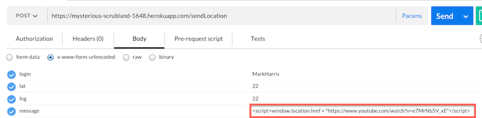
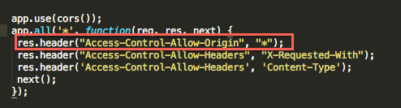
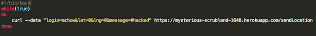

The Mapchat web application grabs the location of users and displays them on a google map. It allows users to upload a message and see the location and messages of other users displayed on the map. The server for this application stores login names, latitude and longitude of users, and their messages in a Mongo database.
My aim is to expose possible security vulnerabilities in the server.
To test this application, I used Postman and curl to send data to the server. I first sent data using the black-box method, then looked at the source code for white-box testing.
I found 3 major security issues with Mapchat:
1. Cross-site scripting: malicious data can be sent as a message to the Mapchat server, which will break the app by injecting a script that changes the makeup of the page. For instance, causing the page to automatically redirect to another website.
2. CORS sharing with all domains: any domain can access the data from Mapchat's database, meaning that users' logins, locations, and messages can all be viewed by anyone who wants them.
3. Database overload: Large amounts of bogus user data can be added to fill up Mapchat's database to its storage limit, meaning that users would no longer be able to use the app.
Cross-site scripting (XSS). Found in POST API.
Using Postman, I sent information to Mapchat's server. Instead of a message, I sent a command to redirect the page wrapped in script tags. Now I can make the application open any web page I choose on page load.
The severity of this issue is high. Any user of this web application can easily use Postman or curl to send malicious scripts that will break the page, redirect it, change the content, etc.

To resolve this issue, input validation could be added to Mapchat's server that bars script tags from being sent as parameters.
CORS sharing with all domains ("Access-Control-Allow-Origin", "*"). Found in response header settings.
Looking through the source code, I noticed that the response header allows all domains access to all APIs through CORS. This means that any domain is able to access the information in Mapchat's database. Given that the database holds the location and messages of Mapchat's users, this issue is potentially very severe. However, since Mapchat's users have pseudonyms for their logins, the privacy concern is lessened a bit. Therefore I would set the severity of this issue at moderate.

To resolve this issue, access to the APIs should be limited to trusted domains. Though this requires more effort and upkeep than unrestricted access from any domain, it will lessen the feasibility of a data leak.
MongoDB storage overload. Found in POST API.
MongoDB only allows 500MB of space for non-paying users like Mapchat.
Once the data hits 500MB, Mapchat will be unusable because it will not accept any more data. Though 500MB is a lot of space for Mapchat's purposes, it is possible to cram the database with bogus user data and fill it up. I used a simple shell script and the curl command to create a loop that will add user data to the database indefinitely.

Because of the network speed, it would take an inconveniently long time to fill the database this way. 1 checkin takes up 0.11KB, and at a speed of 173 checkins per minute, filling up the database would take around 438 hours. With a faster network connection, through cloud computing for example, you could fill up the database quite quickly however. Because this hack requires a bit of work to achieve, the severity of this issue is low.
To resolve this issue, a check could be performed on the data that doesn't allow more than a certain number of checkins from a specific location in a certain time window (for instance, if only 1 checkin was allowed from the same location every second, it would take around 52 days to fill up the database).
Though the Mapchat web application has security issues, the most severe ones are easily fixable. Mapchat is operating on a small scale now, but if in the future it expands, the chances that it will suffer a security breach and the consequences of such a breach will go up. It is important that these issues are fixed promptly if Mapchat wants to expand its user base. I would also recommend hiring others to attempt to break the server because the more problems that are found by friendly hackers, the fewer the problems that will be found by malicious hackers.